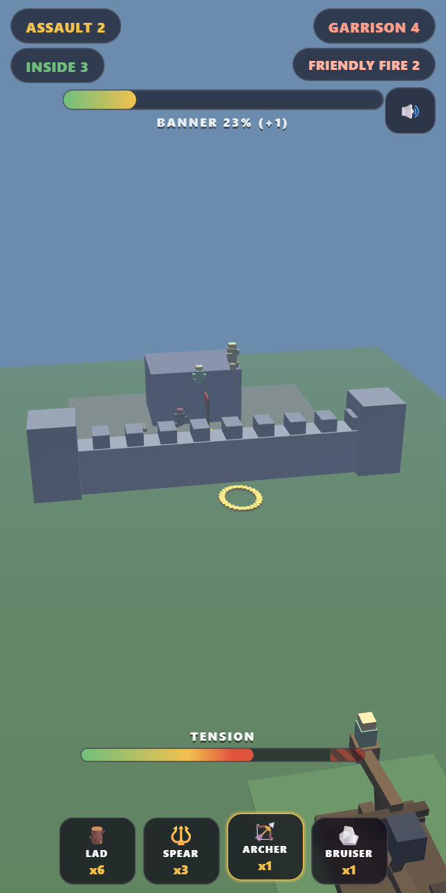

Actual gameplayYou lead them. Loosely.
You command a warband and you have exactly one order available: you, get in the catapult. Drag a unit out of the pen, drop it in the cup, wind the rope and fling it at somebody else's castle. Land them inside the walls and they storm the banner. Land them short and they stand up, look around, and mill about outside for the rest of the assault.
Why it works: there is no forming up and no bracing — a body that lands is a person, not a building material. Everything that happens is your army being bad at things in public. And your archers, who cannot be reasoned with, will keep shooting your own men, because an arrow hits whoever it touches and roughly a third of the time they were aiming at a friend on purpose.